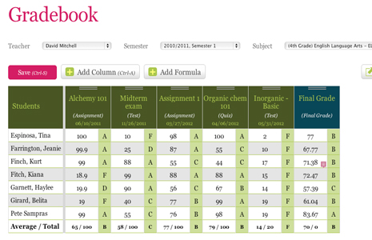

Gradebook
Teachers can manage their own gradebook for all their subjects. Once the Gradebook feature has been turned on and properly configured, you can add new columns and track marks and grades for all teh students in your class.
Turn on Gradebook
To turn on Gradebook, you'll need to be a School Admin user. If you are one, go to the Features screen and click on the checkbox to turn on the feature for Gradebook/Report Cards and then click on the Configure link for more configuration options.
In this pop up box, you can set users to have the ability to view all teachers' gradebooks and run reports and so on and so forth.
General use of Gradebook
- You can easily add columns by clicking on the Add Column button.
- Create formulas by clicking the Add formula button
- Maximize the Gradebook screen
- Edit Gradebook settings

A typical gradebook